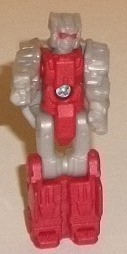
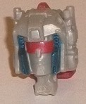
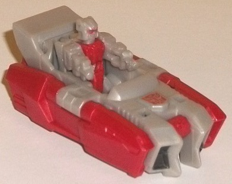
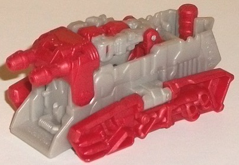
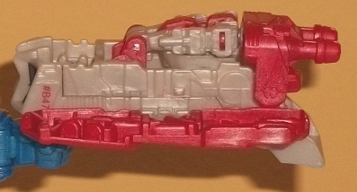

Allegiance
: Autobot
Size
: Titan Master Set
Difficulty of Transformations
: Very
Easy
Color Scheme
: Light milky gray,
moderately dark milky red, and some silver, black, and dark metallic blue
Rating
: 6.4
Loudmouth is another
copyright-friendly name change for a Titan Master-- this is meant to be
Siren, who originally became a police car in G1. In Titan Master mode,
Loudmouth looks vaguely like Siren at least in the face, with a similar
red visor and antennae details on the sides (though sadly only the visor
is painted). The rest of Loudmouth's Titan Master mode is fairly generic,
with a red body and legs, and light milky gray on the rest of him. The
light milky gray is unfortunately the usual boring color that I really
wish Hasbro would replace with something darker and/or more metallic-looking,
but the milky red is a moderately dark shade and looks pretty darned good.
It also contrasts well against the gray, so that's at least something positive
to say about the latter. The mold detailing is pretty typical for a Titan
Master, with little fists molded in (though Loudmouth also has guns molded
onto the tip of his fists), square details on the legs, and a couple minor
rectangular details on his main body. Like all Titan Masters, Loudmouth
can move at the neck, as well as back-and-forth at the shoulders, hips,
and knees (the latter two as one for both legs, since the legs are molded
together). In head mode Loudmouth looks very much like G1 Siren, with a
really well-sculpted face with that familiar red visor, as well as some
nice metallic dark blue detailing along the sides of the face-- the only
use of the color on the entire toy, which is a shame because it's such
a great shade. The rest of his head is unfortunately that plain gray beyond
a little silver square on his forehead, which is hard to make out, unfortunately.
I also like the nice touch of the guns on the hands of the Titan Master
becoming the antennae for Siren's head, which is G1-accurate.
Loudmouth's accessory
in its "main" mode is a hovercraft-- it's very sleek with minimal mold
detailing in this mode, though there are a few major details like skinny
headlights near the front and a bit of a windshield (which really should've
been painted dark metallic blue, sigh). There's also some nice black-painted
intake vents on the front end. Otherwise the colors are pretty boring,
being mostly light milky gray with some milky red on the sides. The proportions
are pretty nice, and about what you'd expect, and I do like the spoiler
that adds a little flair. There's two little pegs on the inside for you
to stick in/sit Loudmouth or another Titan Master inside the seat area
so they can properly ride in this mode.
To get to the accessory's
other mode, you basically just flip the red sides around and then flip
the rear side piece down and flip the whole thing over. In this mode it's
another hovercraft, but with dual guns in the front to give it a bit of
an offensive mode. On the sides there's some nifty new (but unpainted)
details, like exhaust vents/pipes near the back end to emphasize that it
hovers while near the front on the sides there's molded-in missiles. In
general there's some more mold details in this mode to give it a more "military"
feel, with some vents and ridged detailing along the revealed parts on
the sides and front. A Titan Master plugs into the front behind the gun--
it looks a bit odd, but it's a firm connection, and it works.
Like way too many Titan
Master sets, the weapon mode is an afterthought at best. You just take
the previous mode, flip out a handle on the back end for a larger TF to
hold, and then flip the red side pieces up so that they fan out a bit.
The missiles seem a bit more obvious in this mode so that's a plus, but
otherwise this is totally forgettable and barely worth mentioning.
Loudmouth is a pretty
average Titan Master set overall, with no huge pluses or minuses. The color
scheme has a lot of that boring milky gray, but the red looks pretty good.
The Titan Master has some nice sculpting in head mode, but his robot mode
is pretty average and he doesn't have enough paint. His accessories' two
main modes are decent but not great, but his weapon mode's pretty lame.
For every positive you can find a negative, but none of the positives or
negatives are so big that you feel particularly strongly about them. If
you like Siren or just want more Titan Masters, by all means pick him up,
but ultimately Loudmouth's biggest attribute is that he's extremely forgettable.
No Stats
Review by Beastbot